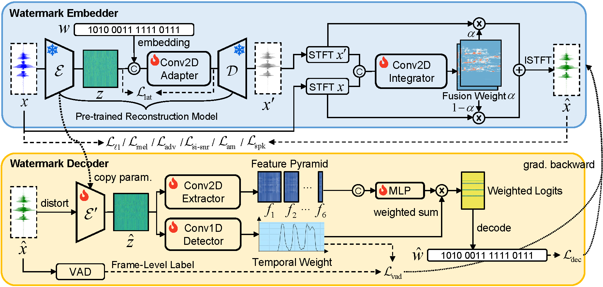

Abstract
Audio watermarking aims to embed identifiable information into audio
while remaining imperceptible. Existing methods adopt high-fidelity,
low-energy designs to preserve perceptual quality, but the resulting
watermarks lack robustness under suppression by speech reconstruction
models. Improving robustness is challenging due to the inherent
robustness–fidelity trade-off in existing designs, where increasing
watermark energy improves robustness but reduces fidelity. To address
this problem, we propose a feature-aligned watermarking method that
aligns the watermark with the original speech feature distribution,
allowing higher watermark energy to improve robustness while
preserving imperceptibility. We use a pretrained speech codec to
generate a pseudo-speech watermark and fuse it into the spectrogram of
the input audio, with VAD loss and perceptual losses guiding embedding
within voiced regions. Experiments show that our method maintains
imperceptibility comparable to existing approaches while substantially
improving robustness under both seen and unseen speech reconstruction
models.
Method Overview

The overall architecture of the proposed watermarking framework.